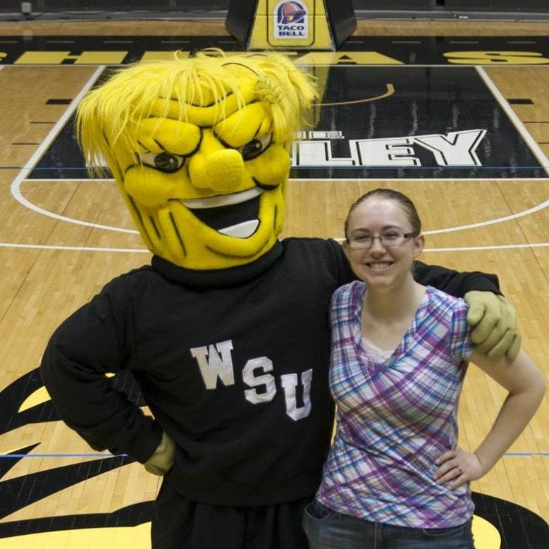

About Me
Several months ago Sarah Linnebur happened to hear Father John Hay mention Caravaggio’s painting of the Conversion of St. Paul and joined the conversion about the patron of the St. Paul Parish and Newman Center at Wichita State University.
A couple of days later Fr. Hay, pastor of the Newman Center, asked Linnebur if she would consider painting her interpretation of the Conversion of St. Paul for the chapel that is currently undergoing an extensive renovation.
She said she hesitated to accept the commission for several reasons: she had never done anything like Father wanted, the finished work will be about four- by five-feet, it will be prominent in the chapel, and he wanted it done by January.
“I was, like, really Father, this is a lot,” she said in an interview in the noisy basement of the Newman Center. “This is daunting. Give me some time to think and pray a little bit.”